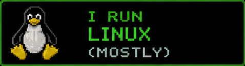
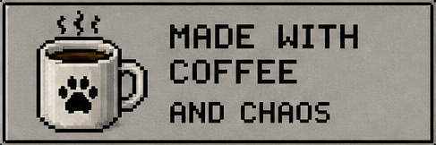

PROJECT DATABASE
[ HOME ] [ PROJECTS ] [ LAB ] [ LOG ] [ ABOUT ]
[ OPERATING SYSTEMS ]
TsukiOS - A small experimental AArch64 kernel with a basic shell and memory information tools.
FrostOS Mobile - Bare-metal mobile OS experiment with a framebuffer interface and UART output.
MonoOS - Rust-based operating system experiment with a monochrome graphical interface.
SnowDE / SnowWM - Experiments around a minimal Wayland desktop environment.
|
[ SOFTWARE & WEB ]
Nivi - A Telegram bot project with commands, APIs and conversational features.
Snow64 - Hardware information app concept.
OpenWarranty - Flutter app experiment.
Mythfur - Social network project built with Django.
|
[ OTHER EXPERIMENTS ]
- Android ROM ports and device tinkering
- Retro handheld and Nintendo 3DS experiments
- Python APIs, automation and scraping
- Linux server and self-hosting tests
STATUS: always changing. Some projects are prototypes or paused.
|



[ back to homepage ]
HTML 4.01 // Project archive
|